<!doctype html><html lang="es"><meta charset="utf-8"><meta name="viewport" content="width=device-width,initial-scale=1"><title>Ejercicios vóley playa Sardi Voley</title><style>
*{box-sizing:border-box}body{margin:0;background:#f8f4eb;color:#123b58;font:16px system-ui}header{background:#123b58;color:white;padding:16px;display:flex;align-items:center;gap:16px}header img{width:70px;border-radius:50%}h1{font-size:22px;margin:0}main,nav{max-width:1100px;margin:auto;padding:16px}nav{display:flex;flex-wrap:wrap;gap:8px}button,input,select,textarea{font:inherit;padding:10px;border:1px solid #aab9c4;border-radius:8px}button{background:#123b58;color:white;cursor:pointer}input,select,textarea{background:white;color:#123b58;max-width:100%}textarea{width:100%;min-height:130px}label{display:block;margin:8px 0}article{background:white;border:1px solid #ddd;border-radius:12px;padding:16px;margin:12px 0;break-inside:avoid}.grid{display:grid;grid-template-columns:1fr 1fr;gap:16px}.tools{display:flex;gap:6px;flex-wrap:wrap}svg{width:100%;max-height:480px;touch-action:none;display:block}small{color:#647789}.red{background:#c52d39}.blue{background:#1764cb}.light{background:#fff;color:#123b58}#msg{padding:0 16px;color:#a33}p{white-space:pre-wrap} @media(max-width:650px){.grid{grid-template-columns:1fr}}@media print{@page{size:A4;margin:12mm}nav,button,#msg,.noPrint{display:none!important}body{background:white}header{color:#123b58;background:white}article{border:0;padding:4px}svg{max-height:220px}.grid{grid-template-columns:1fr 1fr}main{padding:0}}
</style><header><div><h1>Ejercicios vóley playa Sardi Voley</h1>Área técnica · Jaime Dehesa</div></header><nav id="nav"></nav><div id="msg" role="status"></div><main id="main"></main><script src="https://cdn.jsdelivr.net/npm/@supabase/supabase-js@2"></script><script src="config.js"></script><script src="app.js"></script></html>
